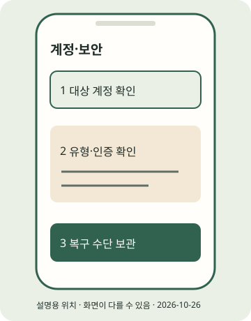

(실습) 실습편 / 1
(실습) 1. 테스트 계정과 보안 준비
본인 게시 계정을 구분하고 복구 수단을 갖춘다.
2026년 10월 조사 기준 · 확인일 2026-10-26 · 근거: PRAC-20 API-01 · E2E 한눈에 보기
진행 기록은 자바스크립트를 켜면 이 브라우저에 저장합니다.
이 실습의 흐름
계정은 몇 개까지?
앱에서 전환 가능한 계정 수의 현행 상한과 계정별 이메일/전화 인증 세부 조건은 7r 근거 미확보 — 확인 필요입니다. 숫자를 확정하지 않습니다. 계정마다 본인이 접근할 인증 수단을 확인하세요. 짧은 시간의 대량 생성은 추가 인증·스팸 판단 위험을 고려해 피하고, 사칭·정지 회피 목적으로 만들지 마세요. 이 위험·약관 세부 적용도 후속 확인 항목입니다.
프로페셔널 계정은 공개
비공개 연습장처럼 취급하지 마세요. 7r은 앱 전환·공개 조건의 본문을 확보하지 못했으므로 전환 시 공개 안내와 실제 공개 상태를 본인이 확인해야 합니다(PRAC-20). 테스트 게시물도 공개될 수 있습니다. 검증 뒤 보관/삭제하려면 아래 후보를 확인하세요.
비밀번호·토큰을 남에게 주지 않기
대행·강의·AI 도구에 비밀번호·인증 코드·토큰을 넘기지 마세요. 토큰은 본인 컴퓨터의 비공개 starter-kit/.env 또는 환경변수에만 둡니다. 환경변수는 프로그램에 설정을 전달하는 실행 환경의 값입니다. 공개 저장소·웹 호스팅에는 미디어만 올립니다.

STEP 01 · 연습용 테스트 계정 만들기
연습용 테스트 계정 만들기
지금 하는 일
기존 계정을 쓸지 연습용 새 계정을 만들지 결정합니다.
왜 하는지
실수한 게시물이 본계정에 올라가지 않게 대상부터 구분합니다.
따라 하기
- 본인만 관리하는 계정 이름을 정하고 실습용임을 소개에 적을 문장을 준비합니다. 실존 브랜드·인물을 사칭하지 않습니다.
- 방법 A: 기존 계정에서 추가. 아래 탐색 후보로 새 계정 만들기를 찾고 앱이 요구하는 가입·인증을 따릅니다.
- 방법 B: 로그아웃 상태에서 가입. 시작 화면의 새 계정 만들기에 해당하는 항목을 찾아 본인 이메일/전화로 가입합니다. 가입 필드·인증 순서는 미확인입니다.
- 이메일
이름+연습@도메인같은 + 별칭 팁은 메일 서비스의 별칭 지원과 Instagram의 수락 여부를 먼저 확인해야 하는 후보입니다. 7r에는 성공 근거가 없으므로 필수 경로로 쓰지 않습니다. 안 되면 본인이 관리하는 별도 이메일을 쓰세요. - 대상 사용자 이름을 별도 개인 메모에 기록합니다. 비밀번호는 이 교재에 입력하지 않습니다.
이렇게 보이면 성공
사용자 본인이 가입과 인증을 마친 뒤, 프로필의 사용자 이름이 의도한 연습 계정인지 확인했습니다. 작업자가 가입 성공을 검증한 것은 아닙니다.
이렇게 보이면?
- 인증이 막히면 반복 생성하지 말고 본인 연락처·앱 도움말을 확인하세요.
- + 별칭이 거부되면 지원된다고 가정하지 말고 본인 별도 주소로 확인하세요.
Windows
이 단계는 Windows와 무관한 휴대폰 또는 웹 작업입니다. 휴대폰 OS와 앱 버전의 화면 차이는 공식 도움말로 확인하세요.macOS
이 단계는 macOS와 무관한 휴대폰 또는 웹 작업입니다. 휴대폰 OS와 앱 버전의 화면 차이는 공식 도움말로 확인하세요.STEP 02 · 계정 유형과 공개 범위 확인
계정 유형과 공개 범위 확인
지금 하는 일
필요하면 연습 계정을 크리에이터 또는 비즈니스로 전환합니다.
왜 하는지
API는 프로페셔널 계정을 대상으로 하므로 경로를 미리 구분합니다.
따라 하기
- 프로필 사용자 이름을 먼저 확인하고 아래 메뉴 후보를 찾습니다.
- 앱이 제시하는 카테고리·크리에이터 / Creator 또는 비즈니스 / Business 선택·공개 안내를 읽습니다. 이 교재는 크리에이터를 탐색 예로 듭니다.
- 전환 뒤 실제 계정 유형·공개 상태를 확인합니다. Instagram Login API에는 Facebook 페이지 연결이 필수라는 안내를 붙이지 않습니다(API-01).
이렇게 보이면 성공
본인이 계정 유형과 공개 안내를 확인해 개인 메모에 적었습니다. 메뉴가 없으면 확인을 보류한 상태로 남깁니다.
이렇게 보이면?
- 이미 전환한 계정인지 먼저 확인하세요. 메뉴 부재만으로 한국 전체 비지원이라고 판단하지 않습니다.
- 전환 과정에 유료 구독 화면이 나오면 필수 단계라고 생각하지 말고 도움말로 돌아가세요.
Windows
이 단계는 Windows와 무관한 휴대폰 또는 웹 작업입니다. 휴대폰 OS와 앱 버전의 화면 차이는 공식 도움말로 확인하세요.macOS
이 단계는 macOS와 무관한 휴대폰 또는 웹 작업입니다. 휴대폰 OS와 앱 버전의 화면 차이는 공식 도움말로 확인하세요.STEP 03 · 2단계 인증과 복구 수단
2단계 인증과 복구 수단
지금 하는 일
인증앱과 백업 수단을 준비합니다.
왜 하는지
비밀번호 하나만 유출되어 계정을 잃는 위험을 줄이기 위해서입니다.
따라 하기
- 2단계 인증은 비밀번호 외에 인증 코드를 더 확인하는 로그인 보호입니다. 아래 후보에서 대상 계정을 선택합니다.
- 공식 도움말과 앱 안내에 따라 인증앱 연결·확인 코드를 입력합니다. 설정 키·QR·코드는 남에게 보여 주지 마세요.
- 백업 코드는 인증앱을 잃었을 때 사용할 복구용 코드입니다. 발급 방법을 확인하고 본인만 접근하는 곳에 보관합니다. 이메일/전화 복구 연락처에도 접근 가능한지 확인합니다.
이렇게 보이면 성공
대상 계정에서 2단계 인증 완료 표시를 본인이 확인하고 복구 연락처와 백업 수단을 안전하게 보관했습니다.
이렇게 보이면?
- 코드가 틀리면 인증앱의 대상 계정과 기기 시간을 점검하고 앱 도움말을 따르세요.
- 백업 코드 화면을 찾지 못했다면 완료로 체크하지 말고 도움말로 확인하세요.
Windows
이 단계는 Windows와 무관한 휴대폰 또는 웹 작업입니다. 휴대폰 OS와 앱 버전의 화면 차이는 공식 도움말로 확인하세요.macOS
이 단계는 macOS와 무관한 휴대폰 또는 웹 작업입니다. 휴대폰 OS와 앱 버전의 화면 차이는 공식 도움말로 확인하세요.STEP 04 · API 실습 준비물만 구분
API 실습 준비물만 구분
지금 하는 일
API를 선택할 때 필요한 준비물을 적습니다.
왜 하는지
오늘 앱 첫 게시를 개발자 설정 때문에 미루지 않기 위해서입니다.
따라 하기
이렇게 보이면 성공
오늘의 기본 경로와 선택 API 경로의 준비물 목록을 구분했습니다.
이렇게 보이면?
- 개발자 계정이 없어도 실습 2~7을 할 수 있습니다.
- 인증·개발자 등록에 결제 요구가 보이면 이 실습의 필수 조건이라고 단정하지 말고 공식 안내를 확인하세요.
Windows
이 단계는 Windows와 무관한 휴대폰 또는 웹 작업입니다. 휴대폰 OS와 앱 버전의 화면 차이는 공식 도움말로 확인하세요.macOS
이 단계는 macOS와 무관한 휴대폰 또는 웹 작업입니다. 휴대폰 OS와 앱 버전의 화면 차이는 공식 도움말로 확인하세요.지금 내 손에 있는 것
본인 게시 계정을 구분하고 복구 수단을 갖춘다. 아래 단계 확인을 모두 마쳤는지 E2E에서 다시 봅니다. 선택하지 않은 포맷·심화는 미완료로 남겨도 됩니다.